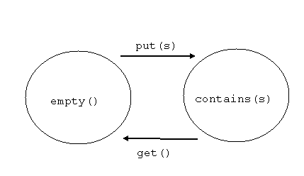

Introduction to Polyphonic C#
Example: A One-Place Buffer
The previous example showed how to define a buffer of unbounded size: any number of calls to put() could be queued up before matching a get(). We now define a variant in which only a single data value may held in the buffer at any one time:
public class OnePlaceBuffer {
public OnePlaceBuffer() {
empty();
}
public void put(String s) & private async empty() {
contains(s);
return;
}
public String get() & private async contains(String s) {
empty();
return s;
}
}
The public interface of OnePlaceBuffer is similar to that of Buffer, although the put() method is now synchronous, since it can now block in the case that there is already an unconsumed value in the buffer.
The implementation of OnePlaceBuffer makes use of two private asynchronous messages: empty() and contains(). These are used to carry the state of the buffer and illustrate a very common programming pattern in Polyphonic C#: note that we have made no use of fields. The way in which this works can be best understood by reading the constructor and the two chords in a simple declarative manner:
- When a new buffer is created, it is initially empty().
- If you call put(s) on an empty() buffer then it subsequently contains(s) and the call to put() returns.
- If you call get() on a buffer which contains(s) then the buffer is subsequently empty() and s is returned to the caller of get().
- Implicitly: In all other cases, calls to put() and get() block.
It is easy to see that the constructor establishes, and both the chords maintain, the invariant that there is always exactly one empty() or contains(s) message pending on the buffer. Thus the two chords can be read as a fairly direct specification of a finite state machine:
More operationally, consider what may happen if a new instance of OnePlaceBuffer receives a sequence of calls <put(s1), put(s2), get(), get()> from separate threads:
- The buffer starts off with an empty() message pending, which was sent by its constructor.
- Then the put(s1) matches with the empty() message, which causes the first chord to execute, consuming the empty() message, sending contains(s1) and allowing the caller of the first put() to proceed without blocking.
- Now the put(s2) arrives and there is no matching chord, so the caller of the second put() is blocked.
- The first get() now arrives, the second chord has a match which consumes the queued contains(s1) message, sends an empty() message and returns s1 to the caller of get() without blocking.
- The first chord now matches, reawakens the previously blocked call to put(s2) , consumes the empty() message, sends contains(s2) and the caller of put(s2) proceeds.
- The second get() arrives and synchronizes with the contains(s2) message, which sends an empty() message and returns s2 to the caller of get().
Of course, depending on the implementation and the operating system scheduler, this is not the only possible sequence of events. In particular, as we only take locks rather briefly, it is possible for a context switch to occur between the two lines of the second chord, so step 5 (and indeed 6) may actually happen after the empty() has been sent in step 4 but before step 4 has completed with the return of s1 to the first caller of get().
Example: A Reader-Writer Lock
Controlling concurrent access to a shared, mutable resource is a classic problem. Clients request, and later release, either read-only or read-write access to the resource. To preserve consistency but minimize waiting, one usually wishes to allow either any number of readers or a single writer, but not both, to have access at any one time. A solution using traditional shared-memory concurrency primitives may be found in Andrew Birrell's "An Introduction to Programming with Threads"; it is instructive to compare that code with the class below, which implements a reader-writer lock in Polyphonic C#:
class ReaderWriter {
ReaderWriter() {
Idle();
}
void Exclusive() & private async Idle() {
}
void ReleaseExclusive() {
Idle();
}
void Shared() & private async Idle() {
S(1);
}
void Shared() & private async S(int n) {
S(n+1);
}
void ReleaseShared() & private async S(int n) {
if (n == 1) Idle(); else S(n-1);
}
}
Again, we use private messages, Idle() and S(n), to carry the state. And once more, there is a simple declarative reading of the constructor and chords which allows one to understand the implementation:
- When the lock is created there are no readers or writers, so it is Idle().
- If a writer requests Exclusive() access and the lock is Idle() then he may proceed (but the lock is no longer Idle()).
- If a writer indicates he is finished by calling ReleaseExclusive() then the lock is Idle() again.
- If a reader requests Shared() access and the lock is Idle() then the lock moves to the state S(1), meaning there is now one reader, and he may proceed.
- If a reader requests Shared() access and there are currently n readers, then there are now n+1 readers, and the new one may proceed.
- If a reader indicates he is finished by calling ReleaseShared() and there were previously n readers, then if n was 1 then lock is Idle() again, otherwise there are now n-1 shared readers. In either case, the reader who has just relinquished access may proceed with whatever else he has to do.
Assuming that all the clients obey the request-release protocol, the invariant is that there is at most one pending private async message representing the state:
none <--> Idle() <--> S(1) <--> S(2) <--> S(3) <--> ...
Operationally, it may help to think about what does not appear in the code. There is, for example, no chord which is applicable if a client calls Exclusive() when there is a pending S(n) message. In such a case, the client will block until all the readers have released their access and an Idle() message has been sent. (There is a question about fairness here - see the Polyphonic C# paper for a modification to this example which enforces a simple form of fairness between readers and writers, as well as an explanation of how one could store the state of the lock in more conventional mutable fields, but use chords to protect access to them.)
If you have understood everything up to this point then you have grasped the essence of Polyphonic C#.
It is also just possible that you were wondering whether it would be correct to make the ReleaseShared() and ReleaseExclusive() methods asynchronous. In fact it is, and from a theoretical point of view, this seems like a better choice - notification that a client has finished with the resource is a one-way communication and there seems no good reason, especially in a distributed environment, for the client to wait for the message to be processed. On a single machine and with a naive implementation of Polyphonic C# (which is the only kind we have currently implemented), however, simply making those methods asynchronous is rather expensive. The reason for that is that the ReleaseX chords then become completely asynchronous and are therefore executed in a new thread. Using ThreadPools instead of completely fresh threads helps somewhat but we'd really like the compiler to be able to observe that the bodies of those chords only make asynchronous calls and always terminate quickly, and hence that it is safe to compile them to use the sending thread in the case that it's local. Polyphonic C# is designed to make it easier for compilers to do this sort of thing, but we haven't implemented it yet.